An engineer states a hardware problem in plain words. A council of AI engineers designs it; an Evaluator accepts or rejects; on rejection a Manager rewrites the council's own instructions; the accepted design is drawn, measured by SAM and corrected until the picture matches. Below: one problem, start to finish. All models are Meta's (Muse Spark, Muse Image, SAM 3.1); this run cost $3.77.
Exactly what the system was given.
Future lunar bases need loose surface soil (regolith) for building and for extracting oxygen. Design a small robot that drives over a bed of lunar soil simulant, digs it up, carries it and dumps it into a collection bin, operated remotely or autonomously by a team that cannot see or hear the robot.
Each version (left), the prompt that produced it (middle), and what happened next (right).
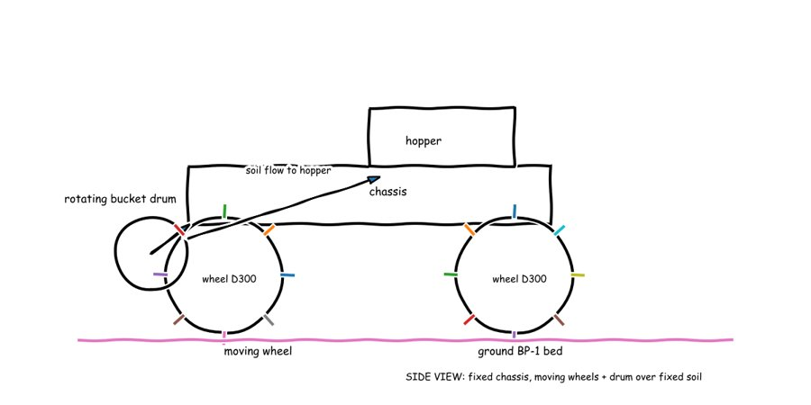
Design: Wide wheels roll over loose soil while a front drum scoops soil into a middle bin that climbs to 1.05 m to pour into a tall box.
Battery 2.92 kg for 341 W; total 50.6 kg. 1 of 4 members ready.
Evaluator rejects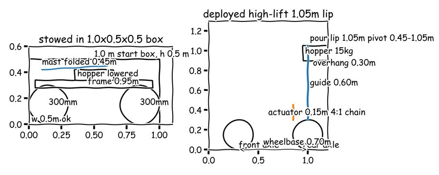
Also rewritten: 4. Meeting protocol, 5. Criteria. Root cause, in the Manager's words: Roles lacked enforced consistency checks (energy equals power times duration versus pack scale; linkage force with friction and useful-vs-input energy; tip arms and stowed fit) and protocol allowed ready vote …
Big spiky wheels roll over loose soil while a spinning front drum scoops soil into a bucket that is lifted about 1 m to pour into a bin, steered by video from a tall folding mast that stops the machine if the signal is lost.
Battery now 90.6 Wh/kg (a purchasable pack), total 53 kg, lift force 735 N.
Evaluator accepts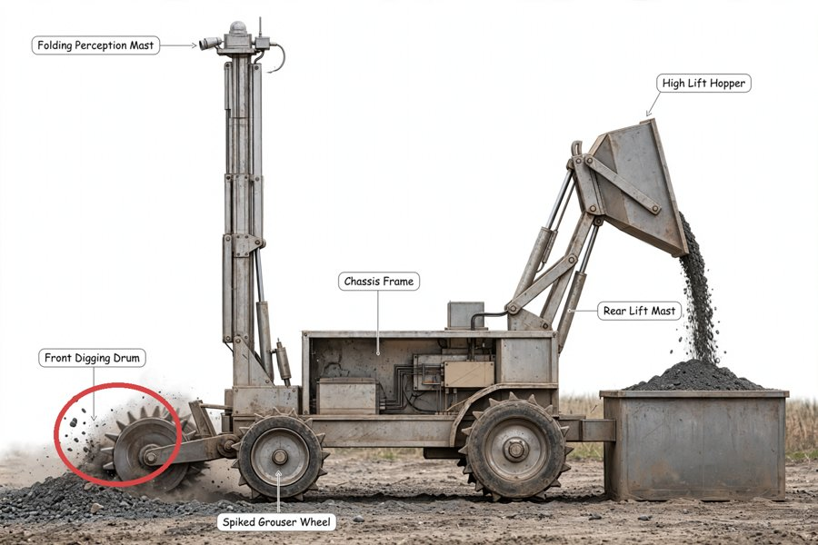
The prompt gradient chose a local fix: redraw only the circled region.
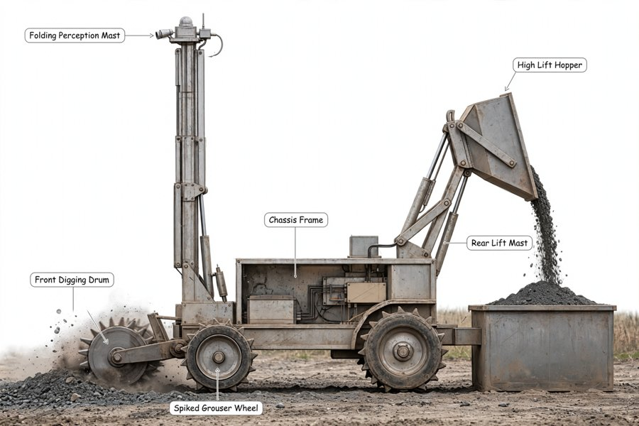
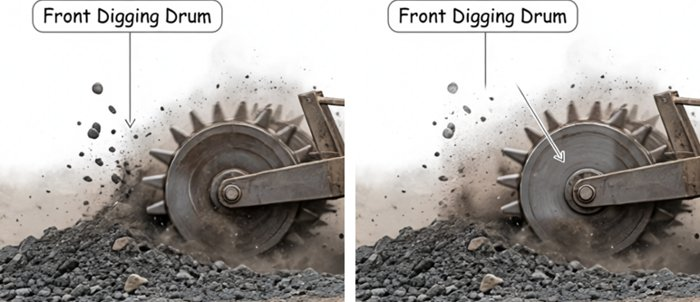
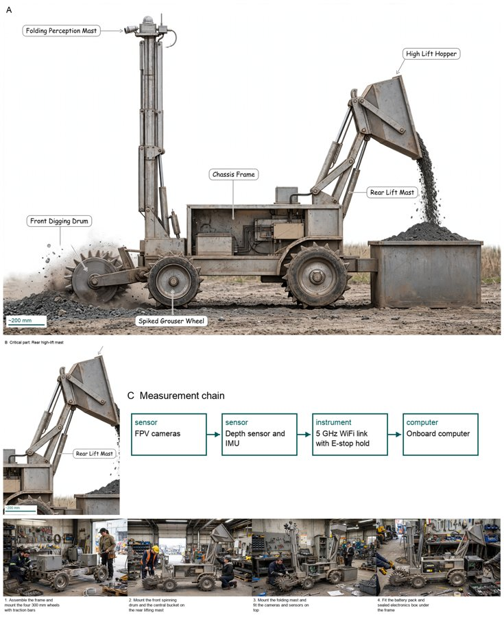
Labelled view, critical part, measurement chain, how it is made.
The system changed, not this design: the Evaluator now sums parts against every size limit, reconciles conflicting values and traces every material, energy and signal flow to a part.
The same events on our block diagrams. Red boxes = the blocks that fired at that step; the figure's own arrows show the loop taken.
1Meeting 1. Four engineers search, calculate and sketch on the whiteboard (60 evidence items). It ends at the round limit with 1 of 4 ready.
2Trigger — the Evaluator rejects. It re-does the battery arithmetic: 1000 Wh in 2.92 kg is three times what a real pack holds.
3Action — the Manager's two-step gradient. Decides which feedback to apply and which prompt section caused it; rewrites 3 sections of the design prompt (rev 0 → rev 1).
4Meeting 2 on rev 1 → accepted. Pack replaced, folded size and lift force computed. Both solutions are kept in the council archive.
5Picture. The council's sketches become a concept sketch; the prompt writer turns it into an image prompt; the image model renders.
6Trigger — the critic finds a fault. SAM measures each part; the critic compares picture and sketch region by region: one label points at dust, not at the drum.
7Action — local fix. Only the faulty region is redrawn; the same region is checked again, marked fixed, and the round is kept.
8Output and memory. The figure is composed; every picture round is archived; lessons and findings go to knowledge/ for the next problem.
SAM 3.1 outlines each part in the picture. Code measures count, direction and contact and gives the differences to the critic as written evidence; the critic must answer each one; confirmed ones become prompt edits. Example: Stair-climbing hand truck for parcel couriers, picture round 1 → 2.
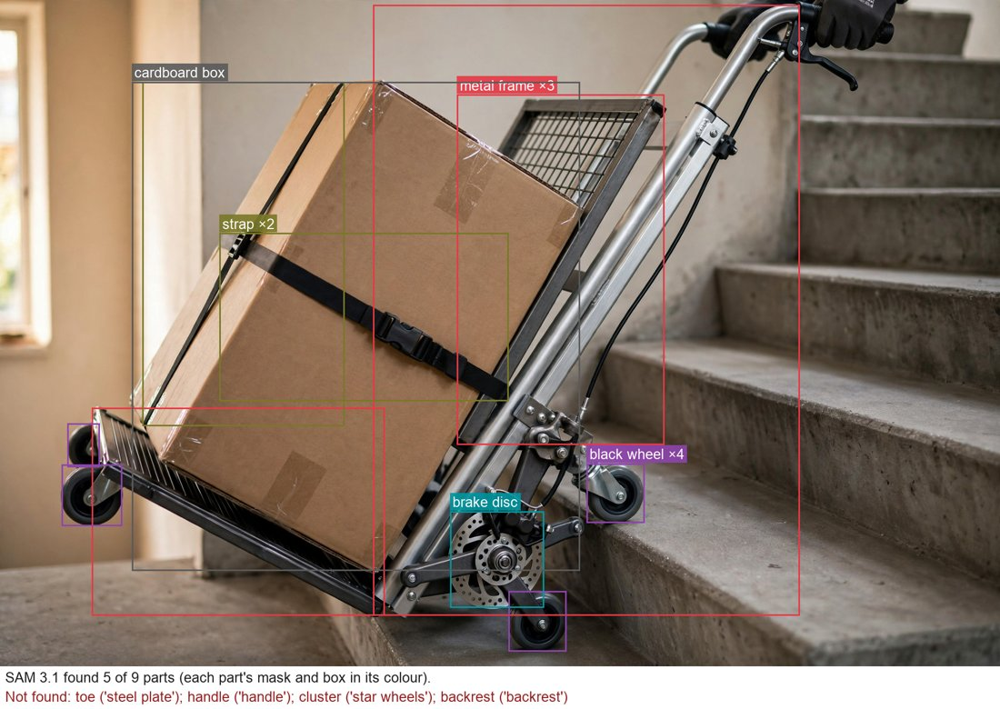
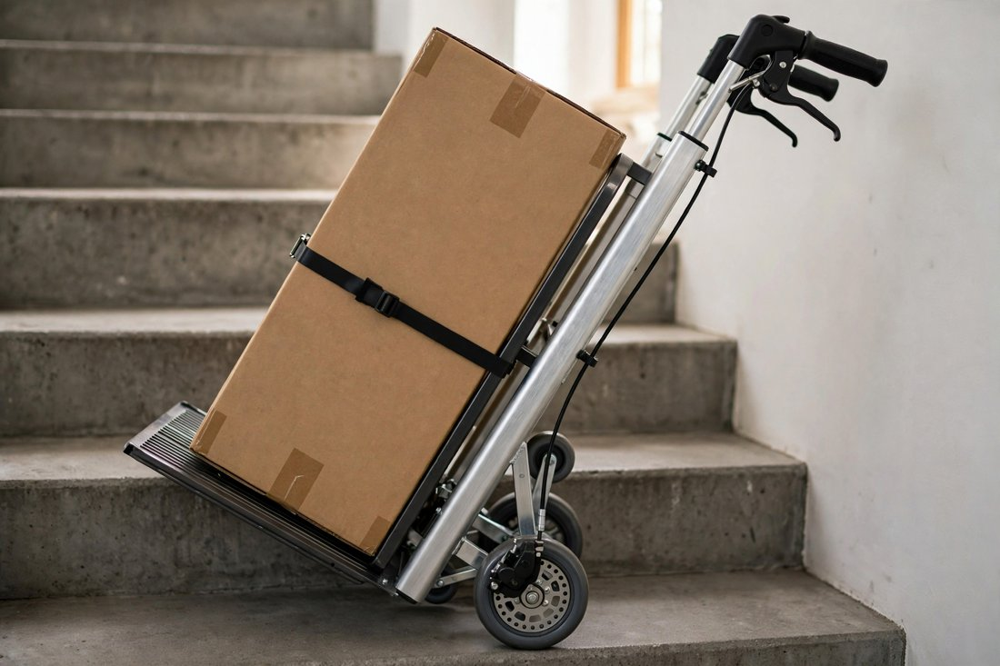
| SAM measured | Critic confirmed | Prompt edit | Round 2 |
|---|---|---|---|
| strap: expected 1 visible, found 2; expected a horizontal long axis, measured vertical | second longitudinal black strap along edge of parcel in addition to transverse buckled strap, long axis vertical | Replace strap phrase with: 'exactly ONE single black transverse retaining strap with buckle around the middle of the box, horizontal orientation, no second strap, no longitudinal vertical strap.' Add to … | fixed |
| wheel: expected 3 visible, found 4 | two small black swivel caster wheels attached to far tip of toe plate | fixed |
How the image prompt changed for round 2: Rewrote toe, cluster-wheel and strap sentences in full exclusivity mode: toe as plain solid plate with no wheels/casters/rollers at tip; tri-star wheels as ONLY wheels with no stabilizer/swivel extra; exactly ONE horizontal transverse strap with no second/vertical/crossing strap. Added corresponding must_not entries.
SAM itself was improved during the project. On the excavator picture the first version found 3 of 10 parts and mistook the digging drum for a wheel. Now the vision model writes the phrases from the picture, parts no phrase finds are prompted with a box, and a judge removes wrong matches: 9 of 10 found.
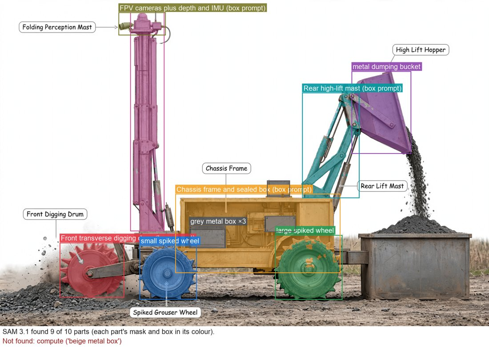
| Problem | Output | What ran | Cost |
|---|---|---|---|
| Stair-climbing hand truck for parcel couriers Couriers in old city centres carry heavy parcels up residential staircases with no lift. Design a hand truck that lets one courier move a load of about 60 … | 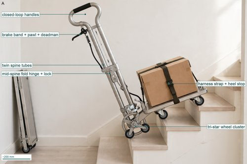 The trolley walks three small wheels on each side over 200 mm stair noses to lift a 60 kg box with long handles, holds on the … | 1 meeting, 0 rejections, 1 picture round details | $1.94 |
| Off-grid solar-powered cold storage for smallholder farmers Smallholder farmers in hot regions without grid electricity lose a large share of their fruit and vegetables after harvest because they cannot keep them cool. Design an energy-efficient, … | 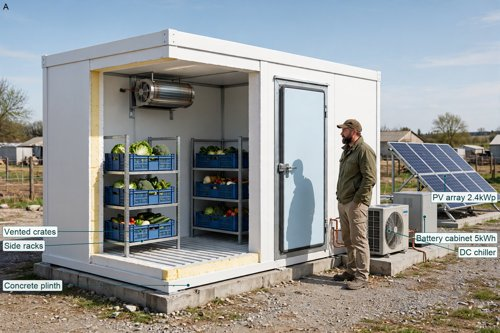 Sunlight makes electricity that is saved for night to run a small cooler that keeps a thick foam room with vented produce crates at 4 C … | 1 meeting, 0 rejections, 1 picture round details | $2.27 |
| Vibration retrofit for a lively pedestrian footbridge A 40 m pedestrian footbridge bounces uncomfortably when crowds walk over it. Its first vertical bending mode is about 1.9 Hz with very low damping. Design a retrofit … | 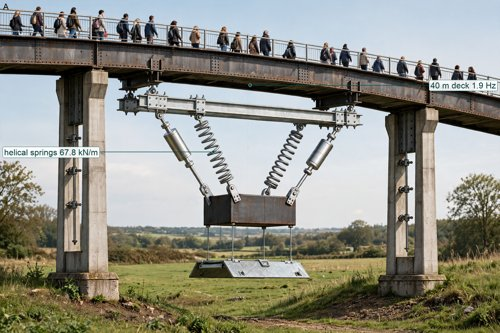 A 500 kg weight hung on tuned springs and dampers under the middle of the bridge sways to calm crowd shaking to a gentle feel. | 1 meeting, 0 rejections, 1 picture round details | $1.64 |
| Lunar regolith excavation robot Future lunar bases need loose surface soil (regolith) for building and for extracting oxygen. Design a small robot that drives over a bed of lunar soil simulant, digs … | 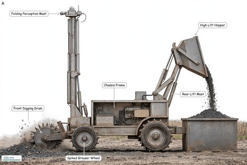 Big spiky wheels roll over loose soil while a spinning front drum scoops soil into a bucket that is lifted about 1 m to pour into … | 2 meetings, 1 rejection, 2 picture rounds details | $3.77 |